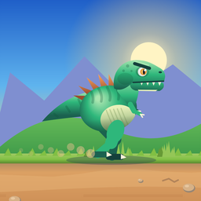

Primal DashLast updated: 6 November 2026 (app version 1.2.0)
Primal Dash: Dino Run © 2026 Adnan Yawar. All rights reserved.
The game code, characters, artwork, levels, sound effects and texts are original work made for Primal Dash by the developer. The artwork is drawn by the game's own code; no third-party images, sprites or fonts are included.
Original background music, provided by the developer with the right to use it in this game.
The dinosaur voice and the Dino Friends narrator are synthetic (AI-generated) voices. They were made once, on the developer's computer, with open-source text-to-speech tools whose licences allow commercial use and distribution:
The voices are not recordings of any real person, and no real person's voice was cloned or imitated. The finished clips are built into the app; the app contains no speech engine and no speech service.
The game works fully offline: no ads, no accounts, no data collection, no microphone. See the privacy policy.
If you have a question about these credits, or believe something in the game uses your work without permission, please email adnanmoon@gmail.com. We will look into it promptly.